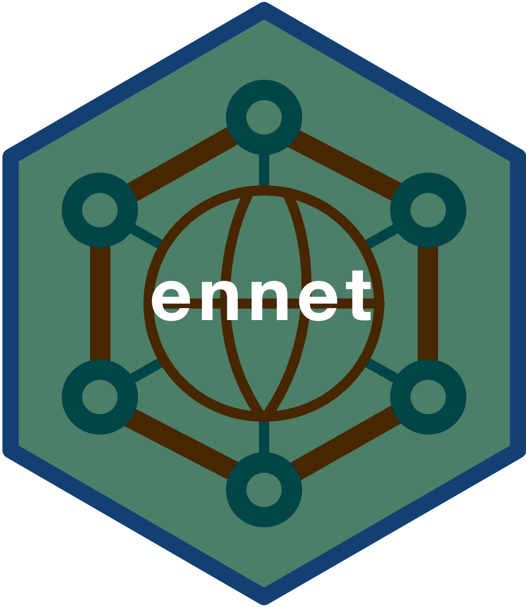

ennet: Utilities to Extract and Analyse Text Data From the Emergency Nutrition Network (en-net) Forum 
en-net is the go to online forum for field practitioners requiring prompt technical advice for operational challenges for which answers are not readily accessible in current guidelines. The questions and the corresponding answers raised within en-net can provide insight into what the key topics of discussion are within the nutrition sector. This package provides utility functions for the extraction, processing and analysis of text data from the online forum.
Installation
ennet is in active development and is not yet available from CRAN.
You can install the development version from GitHub with:
Usage
The ennet package has two key sets of functions. The first set of functions facilitates the extraction of text data from the en-net online forum. The second set of functions supports the analysis of the extracted datasets to produce summary measures and statistics of the en-net online forum.
Extract functions
ennet package provides a set of functions that extracts information from the en-net online forum. This set of functions was built on top of the rvest package which provides robust and performant web scraping functions and the dplyr package which provides a full suite of data manipulation functions. The ennet package was designed to be able to interact with how the en-net online forum has been structured.
en-net website structure
The en-net online forum website has a very clear and clean structure. The opening page is a list of thematic areas which are linked to each of their respective webpages. In each of these thematic area webpages is another list, this time a list of topics raised within the thematic area. These topics are the text that an online user provides as the title for the question she/he is going to ask. Each of the topics are then again linked to their respective webpages that show the actual full question raised and the ensuing responses and discussion stemming from that question.

Based on this structure, the following functions are available with ennet package for extracting text data:
get_themes- function to get a list of thematic areas in the forum;get_theme_topicsandget_themes_topics- functions to get list of topics for a specific thematic area or thematic areas; and,get_topic_discussionsandget_topics_discussions- functions to get list of discussions for a specific topic or topics,
Getting list of thematic areas
To get a list of thematic areas along with the link to the webpage of each thematic area, we use the get_themes() function as follows:
## Load ennet package
library(ennet)
## Get all thematic areas from en-net
get_themes()which results in
#> # A tibble: 18 x 2
#> themes links
#> <chr> <chr>
#> 1 Announcements & Nutritionists needed https://www.en-net.org/foru…
#> 2 Assessment and Surveillance https://www.en-net.org/foru…
#> 3 COVID-19 and nutrition programming https://www.en-net.org/foru…
#> 4 Coverage assessment https://www.en-net.org/foru…
#> 5 Cross-cutting issues https://www.en-net.org/foru…
#> 6 Food assistance https://www.en-net.org/foru…
#> 7 Infant and young child feeding interventions https://www.en-net.org/foru…
#> 8 Management of At Risk Mothers and Infants https://www.en-net.org/foru…
#> 9 Micronutrients https://www.en-net.org/foru…
#> 10 Partnerships for research https://www.en-net.org/foru…
#> 11 Management of wasting/acute malnutrition https://www.en-net.org/foru…
#> 12 Prevention and management of stunting https://www.en-net.org/foru…
#> 13 Scaling Up Nutrition (SUN) https://www.en-net.org/foru…
#> 14 Upcoming trainings https://www.en-net.org/foru…
#> 15 Other thematic area https://www.en-net.org/foru…
#> 16 Multi-sector nutrition programming https://www.en-net.org/foru…
#> 17 Adolescent nutrition https://www.en-net.org/foru…
#> 18 Simplified Approaches for the Management of Acu… https://www.en-net.org/foru…The resulting table has two columns - the first is named themes which contains the various thematic areas on the en-net online forum, and the second is named links which contains the corresponding URL for the webpages for each of the thematic areas.
This will be useful when choosing which themes to focus on when extracting information. This function outputs an object of the appropriate class and structure as the required input for the get_themes_topics() function which would lend to piped operations between the two functions (see below).
Getting list of topics from thematic area/s
To get a list of topics for a particular theme, we use the get_theme_topics() function as follows:
## Load dplyr to facilitate data manipulation
library(dplyr)
## Extract data from "Coverage assessment" theme
get_themes() %>%
filter(themes == "Coverage assessment") %>%
select(links) %>%
as.character() %>%
get_theme_topics()which results in
#> # A tibble: 93 x 7
#> Theme Topic Views Replies Author Posted Link
#> <chr> <chr> <int> <int> <chr> <date> <chr>
#> 1 Coverag… Resources for covera… 9547 11 Tamsin … 2011-12-06 https://www…
#> 2 Coverag… Use of single covera… 2246 7 Hugh Lo… 2019-11-10 https://www…
#> 3 Coverag… Real and theoretical… 2013 3 Abdul 2019-10-10 https://www…
#> 4 Coverag… Single Coverage for … 1799 4 Ben All… 2019-07-05 https://www…
#> 5 Coverag… Cox's Bazar Refugee … 2044 4 Hugh Lo… 2019-03-28 https://www…
#> 6 Coverag… Wide Area Survey (St… 1717 2 Anonymo… 2019-03-09 https://www…
#> 7 Coverag… Disconnection betwee… 1700 2 Tammam … 2019-03-03 https://www…
#> 8 Coverag… Can we classify the … 1878 2 Anonymo… 2018-11-18 https://www…
#> 9 Coverag… Routine monitoring d… 1780 0 Anonymo… 2018-11-14 https://www…
#> 10 Coverag… SQUEAC/coverage surv… 2172 1 Anonymo… 2018-10-05 https://www…
#> # … with 83 more rowsThe resulting table contains information on all the topics within the Coverage assessment thematic area including URL links to the corresponding webpages for each topic
To get a list of topics for multiple themes, we use the get_themes_topics() function as follows:
## Extract data from "Coverage assessment" theme and "Food assistance" theme
get_themes() %>%
filter(themes %in% c("Coverage assessment", "Food assistance")) %>%
get_themes_topics()which results in
#> # A tibble: 124 x 7
#> Theme Topic Views Replies Author Posted Link
#> <chr> <chr> <int> <int> <chr> <date> <chr>
#> 1 Coverag… Resources for covera… 9547 11 Tamsin … 2011-12-06 https://www…
#> 2 Coverag… Use of single covera… 2246 7 Hugh Lo… 2019-11-10 https://www…
#> 3 Coverag… Real and theoretical… 2013 3 Abdul 2019-10-10 https://www…
#> 4 Coverag… Single Coverage for … 1799 4 Ben All… 2019-07-05 https://www…
#> 5 Coverag… Cox's Bazar Refugee … 2044 4 Hugh Lo… 2019-03-28 https://www…
#> 6 Coverag… Wide Area Survey (St… 1717 2 Anonymo… 2019-03-09 https://www…
#> 7 Coverag… Disconnection betwee… 1700 2 Tammam … 2019-03-03 https://www…
#> 8 Coverag… Can we classify the … 1878 2 Anonymo… 2018-11-18 https://www…
#> 9 Coverag… Routine monitoring d… 1780 0 Anonymo… 2018-11-14 https://www…
#> 10 Coverag… SQUEAC/coverage surv… 2172 1 Anonymo… 2018-10-05 https://www…
#> # … with 114 more rowsThe resulting table contains information on all the topics within the Coverage assessment and Food assistance thematic area including URL links to the corresponding webpages for each topic.
Getting discussions from topic/s
To get a list of discussions for a particular topic, we use the get_topic_discussions() function as follows:
get_themes() %>%
filter(themes == "Coverage assessment") %>%
get_themes_topics() %>%
filter(Topic == "Resources for coverage assessment") %>%
select(Link) %>%
as.character() %>%
get_topic_discussions()which results in
#> # A tibble: 12 x 10
#> theme topic user userCode job role date_time type code post
#> <chr> <chr> <chr> <chr> <chr> <chr> <dttm> <chr> <chr> <chr>
#> 1 Cover… Reso… Tams… user24 en-n… Foru… 2011-12-06 11:59:00 ques… 574 "Dea…
#> 2 Cover… Reso… Mark… user31 Cons… Freq… 2011-12-06 13:24:00 answ… 1536 "And…
#> 3 Cover… Reso… Erne… user999 Kati… Tech… 2011-12-22 18:02:00 answ… 1603 "Wor…
#> 4 Cover… Reso… Saul… user1000 Dire… Tech… 2012-01-11 08:59:00 answ… 1664 "And…
#> 5 Cover… Reso… Mark… user31 Cons… Freq… 2012-05-01 12:29:00 answ… 2076 "Jus…
#> 6 Cover… Reso… Erne… user999 Kati… Tech… 2012-05-26 09:48:00 answ… 2180 "We …
#> 7 Cover… Reso… Erne… user999 Kati… Tech… 2012-07-05 11:19:00 answ… 2278 "Dea…
#> 8 Cover… Reso… Mark… user31 Cons… Freq… 2012-09-17 16:40:00 answ… 2442 "Upd…
#> 9 Cover… Reso… Mark… user31 Cons… Freq… 2012-11-01 16:19:00 answ… 2615 "And…
#> 10 Cover… Reso… Mark… user31 Cons… Freq… 2013-04-30 17:19:00 answ… 3288 "The…
#> 11 Cover… Reso… Mark… user31 Cons… Freq… 2013-09-05 09:56:00 answ… 3445 "Her…
#> 12 Cover… Reso… Alex… user107… Acti… Norm… 2020-06-11 17:27:00 answ… 7723 "The…The resulting table contains information on all the discussions within the topic on Resources for coverage assessment within the thematic area of Coverage assessment including the text data on the question and the ensuing reply/replies to the question.
To get a list of discussions for a set of topics, we use the get_topics_discussions() function as follows:
get_themes() %>%
filter(themes %in% c("Coverage assessment", "Food assistance")) %>%
get_themes_topics() %>%
get_topics_discussions()which results in
#> # A tibble: 505 x 10
#> theme topic user userCode job role date_time type code post
#> <chr> <chr> <chr> <chr> <chr> <chr> <dttm> <chr> <chr> <chr>
#> 1 Cover… Reso… Tams… user24 en-n… Foru… 2011-12-06 11:59:00 ques… 574 "Dea…
#> 2 Cover… Reso… Mark… user31 Cons… Freq… 2011-12-06 13:24:00 answ… 1536 "And…
#> 3 Cover… Reso… Erne… user999 Kati… Tech… 2011-12-22 18:02:00 answ… 1603 "Wor…
#> 4 Cover… Reso… Saul… user1000 Dire… Tech… 2012-01-11 08:59:00 answ… 1664 "And…
#> 5 Cover… Reso… Mark… user31 Cons… Freq… 2012-05-01 12:29:00 answ… 2076 "Jus…
#> 6 Cover… Reso… Erne… user999 Kati… Tech… 2012-05-26 09:48:00 answ… 2180 "We …
#> 7 Cover… Reso… Erne… user999 Kati… Tech… 2012-07-05 11:19:00 answ… 2278 "Dea…
#> 8 Cover… Reso… Mark… user31 Cons… Freq… 2012-09-17 16:40:00 answ… 2442 "Upd…
#> 9 Cover… Reso… Mark… user31 Cons… Freq… 2012-11-01 16:19:00 answ… 2615 "And…
#> 10 Cover… Reso… Mark… user31 Cons… Freq… 2013-04-30 17:19:00 answ… 3288 "The…
#> # … with 495 more rowsThe resulting table contains information on all the discussions within all the topics within the thematic areas of Coverage assessment and Food assistance including the text data on the question and the ensuing reply/replies to the question.
Analytics functions
The ennet package also includes analytic functions that summarises the text data available from the en-net online forum. Currently, there are four analytic functions available from ennet:
count_topics- function to count the number of topics or questions by theme and date;count_authors- function to count the number of topics attributed to a specific author;arrange_views- function to arrange topics by number of views; and,arrange_replies- function to arrange topics by number of replies.
Counting number of topics/questions
Summarising the number of topics or questions raised within the en-net online forum is basic and useful analytics that can proxy relative importance of a thematic area within the forum. This is facilitated using the count_topics function. Counting of topics is done per thematic area and by a specific time period. Counting of topics by month and year is performed by default:
get_themes() %>%
get_themes_topics() %>%
count_topics()which results in:
#> # A tibble: 843 x 4
#> Theme Month Year n
#> <chr> <fct> <dbl> <int>
#> 1 Adolescent nutrition Jun 2018 6
#> 2 Adolescent nutrition Jul 2018 2
#> 3 Adolescent nutrition Feb 2020 1
#> 4 Adolescent nutrition May 2018 1
#> 5 Adolescent nutrition Jun 2020 1
#> 6 Adolescent nutrition Aug 2018 1
#> 7 Adolescent nutrition Sep 2018 1
#> 8 Announcements & Nutritionists needed Aug 2015 33
#> 9 Announcements & Nutritionists needed May 2019 27
#> 10 Announcements & Nutritionists needed Jun 2015 26
#> # … with 833 more rowsCounting of topics by year is specified as follows:
get_themes() %>%
get_themes_topics() %>%
count_topics(by_date = "year")which results in:
#> # A tibble: 142 x 3
#> Theme Year n
#> <chr> <dbl> <int>
#> 1 Adolescent nutrition 2018 11
#> 2 Adolescent nutrition 2020 2
#> 3 Announcements & Nutritionists needed 2015 196
#> 4 Announcements & Nutritionists needed 2014 165
#> 5 Announcements & Nutritionists needed 2019 135
#> 6 Announcements & Nutritionists needed 2016 130
#> 7 Announcements & Nutritionists needed 2017 129
#> 8 Announcements & Nutritionists needed 2018 126
#> 9 Announcements & Nutritionists needed 2013 101
#> 10 Announcements & Nutritionists needed 2012 82
#> # … with 132 more rowsCounting of topics overall across the years is specified as follows:
get_themes() %>%
get_themes_topics() %>%
count_topics(by_date = "all")which results in:
#> # A tibble: 18 x 2
#> Theme n
#> <chr> <int>
#> 1 Announcements & Nutritionists needed 1222
#> 2 Management of wasting/acute malnutrition 528
#> 3 Assessment and Surveillance 451
#> 4 Infant and young child feeding interventions 188
#> 5 Coverage assessment 93
#> 6 Upcoming trainings 92
#> 7 COVID-19 and nutrition programming 83
#> 8 Micronutrients 53
#> 9 Other thematic area 51
#> 10 Scaling Up Nutrition (SUN) 51
#> 11 Cross-cutting issues 47
#> 12 Food assistance 31
#> 13 Management of At Risk Mothers and Infants 26
#> 14 Prevention and management of stunting 20
#> 15 Partnerships for research 18
#> 16 Adolescent nutrition 13
#> 17 Simplified Approaches for the Management of Acute Malnutrition 10
#> 18 Multi-sector nutrition programming 3By default, the output of count_topics arranges the results by descending frequency of counts of each topic by the grouping variable. This default behaviour can be changed by setting the .sorted argument to FALSE.
Arranging topics by number of views
Summarising the number of topics or questions raised within the en-net online forum by arranging them based on number of views can proxy level of interest to a specific topic by those participating in the forum. This is facilitated using the arrange_views function. Ranking of topics by number of views is done per thematic area and by a specific time period. Ranking of topics by number of views by thematic area and by month and year is performed by default:
get_themes() %>%
get_themes_topics() %>%
arrange_views()which results in:
#> # A tibble: 2,980 x 9
#> Theme Topic Views Author Posted Link Replies Month Year
#> <chr> <chr> <int> <chr> <date> <chr> <int> <fct> <dbl>
#> 1 Adoles… Age group of … 525 Anonym… 2020-02-15 https://… 1 Feb 2020
#> 2 Adoles… Launch of res… 1894 Jo Lof… 2018-05-23 https://… 0 May 2018
#> 3 Adoles… Reaching out … 2063 Emily … 2018-06-18 https://… 3 Jun 2018
#> 4 Adoles… adolescent ma… 2049 Anonym… 2018-06-21 https://… 1 Jun 2018
#> 5 Adoles… adolescent ma… 1859 Anonym… 2018-06-21 https://… 1 Jun 2018
#> 6 Adoles… anthropometry… 1814 Emily … 2018-06-29 https://… 2 Jun 2018
#> 7 Adoles… Teen/adolesce… 1751 Anne H… 2018-06-19 https://… 1 Jun 2018
#> 8 Adoles… health educat… 1532 Anonym… 2018-06-19 https://… 1 Jun 2018
#> 9 Adoles… Is there any … 820 Aisha … 2020-06-12 https://… 1 Jun 2020
#> 10 Adoles… Assessing nut… 1848 Ursula… 2018-07-25 https://… 3 Jul 2018
#> # … with 2,970 more rowsArranging topics by number of views by thematic area and by year is performed as follows:
get_themes() %>%
get_themes_topics() %>%
arrange_views(by_date = "year")which results in:
#> # A tibble: 2,980 x 9
#> Theme Topic Views Author Posted Link Replies Month Year
#> <chr> <chr> <int> <chr> <date> <chr> <int> <fct> <dbl>
#> 1 Adolesc… Reaching ou… 2063 Emily … 2018-06-18 https://w… 3 Jun 2018
#> 2 Adolesc… adolescent … 2049 Anonym… 2018-06-21 https://w… 1 Jun 2018
#> 3 Adolesc… Launch of r… 1894 Jo Lof… 2018-05-23 https://w… 0 May 2018
#> 4 Adolesc… adolescent … 1859 Anonym… 2018-06-21 https://w… 1 Jun 2018
#> 5 Adolesc… Assessing n… 1848 Ursula… 2018-07-25 https://w… 3 Jul 2018
#> 6 Adolesc… anthropomet… 1814 Emily … 2018-06-29 https://w… 2 Jun 2018
#> 7 Adolesc… Teen/adoles… 1751 Anne H… 2018-06-19 https://w… 1 Jun 2018
#> 8 Adolesc… Adolescent … 1728 Tamsin… 2018-08-01 https://w… 3 Aug 2018
#> 9 Adolesc… adolescent … 1682 Anonym… 2018-07-04 https://w… 1 Jul 2018
#> 10 Adolesc… MUAC tape f… 1593 Anonym… 2018-09-27 https://w… 1 Sep 2018
#> # … with 2,970 more rowsArranging topics by number of views by thematic area overall across the years is performed as follows:
get_themes() %>%
get_themes_topics() %>%
arrange_views(by_date = "all")which results in:
#> # A tibble: 2,980 x 9
#> Theme Topic Views Author Posted Link Replies Month Year
#> <chr> <chr> <int> <chr> <date> <chr> <int> <fct> <dbl>
#> 1 Adolesc… Reaching ou… 2063 Emily … 2018-06-18 https://w… 3 Jun 2018
#> 2 Adolesc… adolescent … 2049 Anonym… 2018-06-21 https://w… 1 Jun 2018
#> 3 Adolesc… Launch of r… 1894 Jo Lof… 2018-05-23 https://w… 0 May 2018
#> 4 Adolesc… adolescent … 1859 Anonym… 2018-06-21 https://w… 1 Jun 2018
#> 5 Adolesc… Assessing n… 1848 Ursula… 2018-07-25 https://w… 3 Jul 2018
#> 6 Adolesc… anthropomet… 1814 Emily … 2018-06-29 https://w… 2 Jun 2018
#> 7 Adolesc… Teen/adoles… 1751 Anne H… 2018-06-19 https://w… 1 Jun 2018
#> 8 Adolesc… Adolescent … 1728 Tamsin… 2018-08-01 https://w… 3 Aug 2018
#> 9 Adolesc… adolescent … 1682 Anonym… 2018-07-04 https://w… 1 Jul 2018
#> 10 Adolesc… MUAC tape f… 1593 Anonym… 2018-09-27 https://w… 1 Sep 2018
#> # … with 2,970 more rowsBy default, the output of arrange_views is grouped by thematic area. This default behaviour can be changed by setting the by_theme argument to FALSE. For example, to arrange the topics by number of views by month and year across all themes:
get_themes() %>%
get_themes_topics() %>%
arrange_views(by_theme = FALSE)which results in:
#> # A tibble: 2,980 x 9
#> Theme Topic Views Author Posted Link Replies Month Year
#> <chr> <chr> <int> <chr> <date> <chr> <int> <fct> <dbl>
#> 1 Infant an… Breastfeedin… 9082 Anony… 2010-01-07 https:/… 3 Jan 2010
#> 2 Announcem… Nutrition in… 8291 Marie… 2010-01-05 https:/… NA Jan 2010
#> 3 Assessmen… How to Maint… 5484 Anony… 2010-01-15 https:/… 2 Jan 2010
#> 4 Assessmen… Interpretati… 8361 Tamsi… 2011-01-05 https:/… 10 Jan 2011
#> 5 Assessmen… Calculating … 7377 Ali M… 2011-01-19 https:/… 3 Jan 2011
#> 6 Assessmen… Prospective … 5825 Jeff … 2011-01-27 https:/… 7 Jan 2011
#> 7 Announcem… IYCF Consult… 5274 Aliso… 2011-01-04 https:/… NA Jan 2011
#> 8 Announcem… Technical Su… 5220 Tamsi… 2011-01-18 https:/… NA Jan 2011
#> 9 Cross-cut… Transitionin… 5096 Anony… 2011-01-25 https:/… 1 Jan 2011
#> 10 Assessmen… Result with … 5011 Anony… 2011-01-25 https:/… 2 Jan 2011
#> # … with 2,970 more rowsArranging topics by number of replies
Summarising the number of topics or questions raised within the en-net online forum by arranging them based on number of replies can proxy level of interest to a specific topic by those participating in the forum specifically those who provide responses and feedback to responses within the discussion. This is facilitated using the arrange_replies function. Ranking of topics by number of replies is done per thematic area and by a specific time period. Ranking of topics by number of replies by thematic area and by month and year is performed by default:
get_themes() %>%
get_themes_topics() %>%
arrange_replies()which results in:
#> # A tibble: 1,758 x 9
#> Theme Topic Views Author Posted Link Replies Month Year
#> <chr> <chr> <int> <chr> <date> <chr> <int> <fct> <dbl>
#> 1 Adoles… Age group of … 525 Anonym… 2020-02-15 https://… 1 Feb 2020
#> 2 Adoles… Launch of res… 1894 Jo Lof… 2018-05-23 https://… 0 May 2018
#> 3 Adoles… Reaching out … 2063 Emily … 2018-06-18 https://… 3 Jun 2018
#> 4 Adoles… anthropometry… 1814 Emily … 2018-06-29 https://… 2 Jun 2018
#> 5 Adoles… adolescent ma… 2049 Anonym… 2018-06-21 https://… 1 Jun 2018
#> 6 Adoles… adolescent ma… 1859 Anonym… 2018-06-21 https://… 1 Jun 2018
#> 7 Adoles… Teen/adolesce… 1751 Anne H… 2018-06-19 https://… 1 Jun 2018
#> 8 Adoles… health educat… 1532 Anonym… 2018-06-19 https://… 1 Jun 2018
#> 9 Adoles… Is there any … 820 Aisha … 2020-06-12 https://… 1 Jun 2020
#> 10 Adoles… Assessing nut… 1848 Ursula… 2018-07-25 https://… 3 Jul 2018
#> # … with 1,748 more rowsArranging topics by number of replies by thematic area and by year is performed as follows:
get_themes() %>%
get_themes_topics() %>%
arrange_replies(by_date = "year")which results in:
#> # A tibble: 1,758 x 9
#> Theme Topic Views Author Posted Link Replies Month Year
#> <chr> <chr> <int> <chr> <date> <chr> <int> <fct> <dbl>
#> 1 Adolesc… Adolescent … 1728 Tamsin… 2018-08-01 https://w… 3 Aug 2018
#> 2 Adolesc… Assessing n… 1848 Ursula… 2018-07-25 https://w… 3 Jul 2018
#> 3 Adolesc… Reaching ou… 2063 Emily … 2018-06-18 https://w… 3 Jun 2018
#> 4 Adolesc… anthropomet… 1814 Emily … 2018-06-29 https://w… 2 Jun 2018
#> 5 Adolesc… MUAC tape f… 1593 Anonym… 2018-09-27 https://w… 1 Sep 2018
#> 6 Adolesc… adolescent … 1682 Anonym… 2018-07-04 https://w… 1 Jul 2018
#> 7 Adolesc… adolescent … 2049 Anonym… 2018-06-21 https://w… 1 Jun 2018
#> 8 Adolesc… adolescent … 1859 Anonym… 2018-06-21 https://w… 1 Jun 2018
#> 9 Adolesc… Teen/adoles… 1751 Anne H… 2018-06-19 https://w… 1 Jun 2018
#> 10 Adolesc… health educ… 1532 Anonym… 2018-06-19 https://w… 1 Jun 2018
#> # … with 1,748 more rowsArranging topics by number of replies by thematic area overall across the years is performed as follows:
get_themes() %>%
get_themes_topics() %>%
arrange_replies(by_date = "all")which results in:
#> # A tibble: 1,758 x 9
#> Theme Topic Views Author Posted Link Replies Month Year
#> <chr> <chr> <int> <chr> <date> <chr> <int> <fct> <dbl>
#> 1 Adoles… Adolescent sc… 1728 Tamsin… 2018-08-01 https://… 3 Aug 2018
#> 2 Adoles… Assessing nut… 1848 Ursula… 2018-07-25 https://… 3 Jul 2018
#> 3 Adoles… Reaching out … 2063 Emily … 2018-06-18 https://… 3 Jun 2018
#> 4 Adoles… anthropometry… 1814 Emily … 2018-06-29 https://… 2 Jun 2018
#> 5 Adoles… Is there any … 820 Aisha … 2020-06-12 https://… 1 Jun 2020
#> 6 Adoles… Age group of … 525 Anonym… 2020-02-15 https://… 1 Feb 2020
#> 7 Adoles… MUAC tape for… 1593 Anonym… 2018-09-27 https://… 1 Sep 2018
#> 8 Adoles… adolescent sc… 1682 Anonym… 2018-07-04 https://… 1 Jul 2018
#> 9 Adoles… adolescent ma… 2049 Anonym… 2018-06-21 https://… 1 Jun 2018
#> 10 Adoles… adolescent ma… 1859 Anonym… 2018-06-21 https://… 1 Jun 2018
#> # … with 1,748 more rowsBy default, the output of arrange_replies is grouped by thematic area. This default behaviour can be changed by setting the by_theme argument to FALSE. For example, to arrange the topics by number of replies by month and year across all themes:
get_themes() %>%
get_themes_topics() %>%
arrange_replies(by_theme = FALSE)which results in:
#> # A tibble: 1,758 x 9
#> Theme Topic Views Author Posted Link Replies Month Year
#> <chr> <chr> <int> <chr> <date> <chr> <int> <fct> <dbl>
#> 1 Infant a… Breastfeedin… 9082 Anonym… 2010-01-07 https:/… 3 Jan 2010
#> 2 Assessme… How to Maint… 5484 Anonym… 2010-01-15 https:/… 2 Jan 2010
#> 3 Assessme… Interpretati… 8361 Tamsin… 2011-01-05 https:/… 10 Jan 2011
#> 4 Assessme… Prospective … 5825 Jeff M… 2011-01-27 https:/… 7 Jan 2011
#> 5 Assessme… Calculating … 7377 Ali Ma… 2011-01-19 https:/… 3 Jan 2011
#> 6 Assessme… Result with … 5011 Anonym… 2011-01-25 https:/… 2 Jan 2011
#> 7 Cross-cu… Transitionin… 5096 Anonym… 2011-01-25 https:/… 1 Jan 2011
#> 8 Assessme… Nutritional … 7431 Mary M… 2012-01-01 https:/… 10 Jan 2012
#> 9 Upcoming… Regional SMA… 5613 Yara S… 2012-01-10 https:/… 8 Jan 2012
#> 10 Micronut… multi-micron… 5942 REBECC… 2012-01-18 https:/… 6 Jan 2012
#> # … with 1,748 more rowsUtilities and datasets
In addition to these two sets of key functions, ennet package also includes a function - update_topics - that extracts the en-net online forum dataset and updates it at a given time interval. This is a convenience wrapper function to get_themes_topics that is potentially useful for those who wants to build dashboards or applications that uses data from the en-net online forum.
Two datasets are also included in the en-net package. The first dataset is a data.frame of en-net online forum themes and the second dataset is a data.frame of en-net online forum topics.
Practical applications
The en-net online forum is a rich resource for understanding the community of users that participate in it. And given how an online forum is designed, that resource can be tapped relatively easily given that the documentation of the interaction and discussion between its users happens in real-time. The ennet package facilitates the access to that information through the statistical analysis tool R with which further levels of analysis can be applied to generate meaningful and valuable understanding of this specific community and to some extent the greater nutrition sector at large.
Following are a few practical and meaningful applications of the information generated by the en-net online forum.
Assess effectiveness of the en-net online forum
The data from the en-net online forum can be used to assess effectiveness of the forum. Effectiveness can be defined as whether the forum has been able to achieve its stated aims/objectives when it was started. Effectiveness can also be expressed in terms of indicators or metrics that reflect overarching principles, ideals or values that those who started the forum adhere to or that the community of users and the wider sector or society believe in. These may include values of inclusion, participation, scientific rigour among others. Given that the forum has been in existence for many years now, information is available over the same period allowing for assessing temporal variation in effectiveness (as defined). This application is a more normative approach and will involve creating or developing metrics or taking relevant metrics from other sectors and applying those to this case.
Identify gaps in information, knowledge and/or skills
Given the nature of the en-net online forum as a quick point of recourse for field practitioners to seek answers to practical questions and challenges faced, it can be expected that the data from the forum contains information on what these topics are. These information can then be used to identify most common or most important information, knowledge and skills that have been asked about. By identifying these gaps in information, knowledge and/or skills and by understanding the evolution of these needs over time, we can potentially predict training needs in the near term and over time. This application is a more formative approach in that we let the data tell us what information it holds.